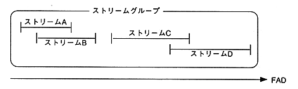

<HTML>
<HEAD>
<TITLE>SEGA SATURN DEVELOPER'S MANUAL</TITLE>
</HEAD>
<BODY bgcolor="#ffffff">
<A HREF=p077.htm> Return to previous page </A> ｜ <A HREF=../mokuzi.htm> Return to menu </A> ｜ <A HREF=p079.htm> Go to next page </A>
<HR><P><P><DL>
<DT><table border cellpadding=5>
<td width = 150 align = "left"> <pre> <B> Title </B> <br> Function specifications </td> <td width = 220 align = "left"> <pre> <B> Function </B> <br> Close stream group </td> <td width = 160 align = "left"> <pre> <B> Function Name </B> <br> STM_CloseGrp </td> <td width = 60 align="left"><pre><B>No</B><br>2.2</td>
</table><p>
<DD> <UL> <PRE> <B> format </B> void STM_CloseGrp (StmGrpHn grp)
<B> Input </B> grp: Stream group handle
<B> Output </B> None
<B> Function value </B> None
<B> Function </B> Closes the stream group.
<B> Remarks </B> All streams belonging to a stream group are closed. </PRE></UL><BR>
<DT><table border cellpadding=5>
<td width = 150 align = "left"> <pre> <B> Title </B> <br> Function specifications </td> <td width = 220 align = "left"> <pre> <B> Function </B> <br> Get number of streams </td> <td width = 160 align = "left"> <pre> <B> Function Name </B> <br> STM_GetStmNum </td> <td width = 60 align="left"><pre><B>No</B><br>2.3</td>
</table><p>
<DD> <UL> <PRE> <B> format </B> Sint32 STM_GetStmNum (StmGrpHn grp)
<B> Input </B> grp: Stream group handle
<B> Output </B> None
<B> Function value </B> The number of streams belonging to the stream group.
<B> Function </B> Gets the number of streams belonging to the specified stream group. </PRE></UL><BR>
<DT><table border cellpadding=5>
<td width = 150 align = "left"> <pre> <B> Title </B> <br> Function specifications </td> <td width = 220 align = "left"> <pre> <B> Function </B> <br> Get stream handle </td> <td width = 160 align = "left"> <pre> <B> Function Name </B> <br> STM_GetStmHndl </td> <td width = 60 align="left"><pre><B>No</B><br>2.4</td>
</table><p>
<DD> <UL> <PRE> <B> format </B> StmHn STM_GetStmHndl (StmGrpHn grp, Sint32 nstm)
<B> Input </B> grp: Stream group handle
<B>: </B> nstm: Playback order number (0 ≤ nstm <STM_GetStmNum)
<B> Output </B> None
<B> Function value </B> Stream handle of the specified playback order number.
<B> </B> NULL if there is no corresponding stream.
<B> Function </B> Gets the handle of a stream belonging to the specified stream group.
<B> Remarks </B> The playback order when the following four streams belong to the same stream group:
<B> </B> is in the order of streams A, B, C, and D.
<UL><UL></PRE></UL></UL></UL><BR>
</DL><P><P><HR>
<A HREF=p077.htm> Return to previous page </A> ｜ <A HREF=../mokuzi.htm> Return to menu </A> ｜ <A HREF=p079.htm> Go to next page </A>
</BODY>
</HTML>